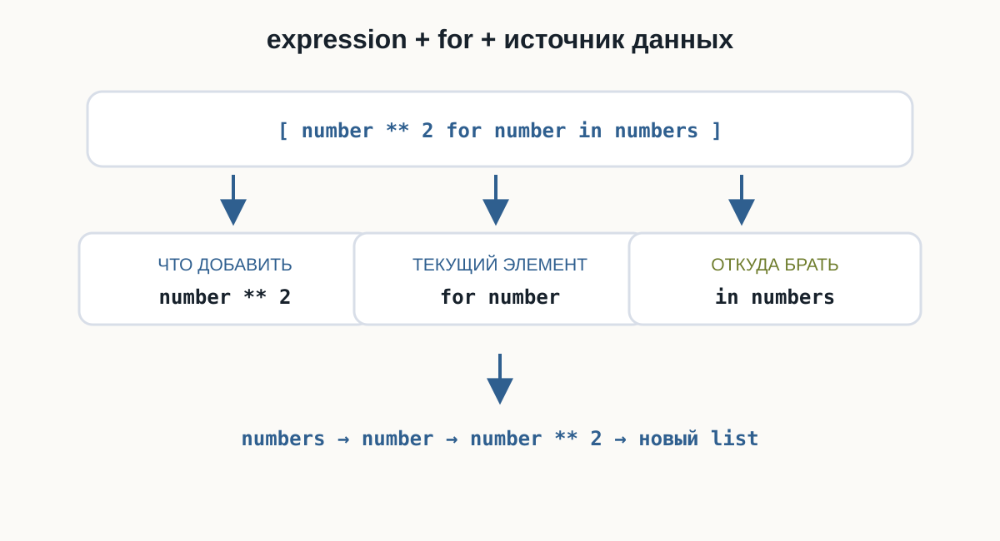
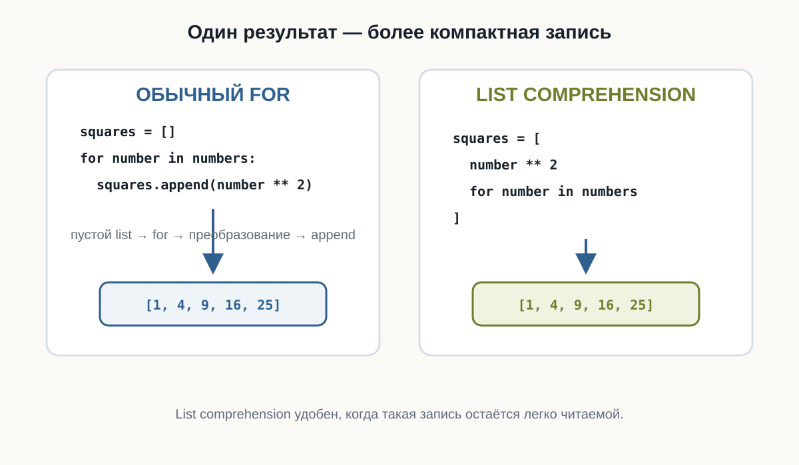
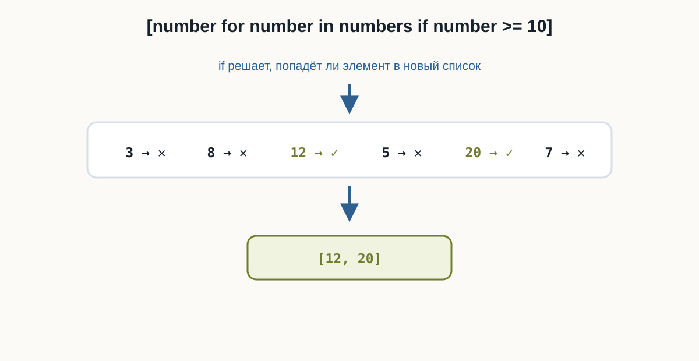
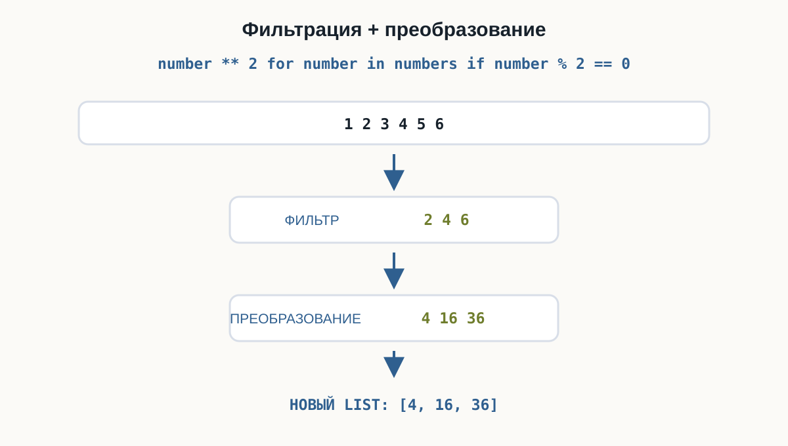
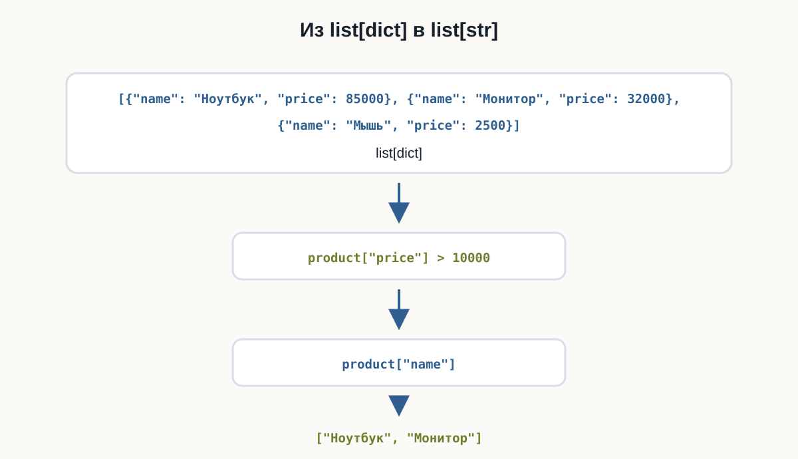

4.6 List comprehensions
list comprehensions Python, генераторы списков Python, списковые включения Python, создание списков Python, for if Python, Python list comprehension
Главный вопрос главы:
Как создавать новые списки на основе существующих без повторяющегося for и append()?
В предыдущих главах мы часто создавали новый список так:
numbers = [1, 2, 3, 4, 5]
squares = []
for number in numbers:
squares.append(number ** 2)
print(squares)Результат:
[1, 4, 9, 16, 25]Этот код понятен:
создать пустой список
↓
перебрать исходные данные
↓
преобразовать элемент
↓
добавить результатВ Python такой шаблон можно записать компактнее:
squares = [number ** 2 for number in numbers]Это list comprehension.
Первый list comprehension
Рассмотрим полный пример:
numbers = [1, 2, 3, 4, 5]
squares = [number ** 2 for number in numbers]
print(squares)Результат:
[1, 4, 9, 16, 25]Общий синтаксис:
[expression for item in iterable]Например:
[number ** 2 for number in numbers]Здесь:
number ** 2
→ что добавить в новый список
for number in numbers
→ откуда брать элементы
Обычный цикл и list comprehension
Эти два варианта решают одну задачу.
Обычный цикл:
squares = []
for number in numbers:
squares.append(number ** 2)List comprehension:
squares = [number ** 2 for number in numbers]Во втором варианте исчезают:
squares = []и:
squares.append(...)Python сразу создаёт новый список.

Как читать list comprehension
Рассмотрим:
[length * 2 for length in lengths]Удобно читать начиная с for:
для каждого length из lengths
↓
вычислить length * 2
↓
добавить результат в новый списокНапример:
lengths = [2, 5, 8]
doubled = [length * 2 for length in lengths]
print(doubled)Результат:
[4, 10, 16]Если запись:
[value * 2 for value in values]пока выглядит непривычно, сначала прочитайте:
for value in valuesа затем посмотрите, какое выражение стоит слева:
value * 2Так конструкцию проще разобрать.
Новый список создаётся отдельно
List comprehension не изменяет исходный список:
numbers = [1, 2, 3]
doubled = [number * 2 for number in numbers]
print(numbers)
print(doubled)Результат:
[1, 2, 3]
[2, 4, 6]numbers остаётся прежним.
Создаётся новый список:
doubledПреобразование чисел
List comprehension особенно удобен для однотипных преобразований.
Например, перевод температур из градусов Цельсия в Фаренгейты:
number-transform.py
celsius = [0, 10, 20, 30]
fahrenheit = [
temperature * 9 / 5 + 32
for temperature in celsius
]
print(fahrenheit)Результат:
[32.0, 50.0, 68.0, 86.0]Каждый элемент проходит через одно выражение:
temperature * 9 / 5 + 32Преобразование строк
List comprehension работает не только с числами.
Например:
names = ["anna", "max", "olga"]
upper_names = [name.upper() for name in names]
print(upper_names)Результат:
['ANNA', 'MAX', 'OLGA']Для каждого элемента вызывается:
name.upper()Получение длины строк
Можно получить новое значение из каждого элемента:
string-transform.py
languages = [
"Python",
"Go",
"JavaScript"
]
lengths = [
len(language)
for language in languages
]
print(lengths)Результат:
[6, 2, 10]Исходный список содержит строки:
Python
Go
JavaScriptНовый — числа:
6
2
10Тип элементов нового списка не обязан совпадать с исходным.
Фильтрация с if
Иногда нужно добавить не все элементы.
Обычный вариант:
numbers = [3, 8, 12, 5, 20, 7]
large_numbers = []
for number in numbers:
if number >= 10:
large_numbers.append(number)
print(large_numbers)Результат:
[12, 20]С list comprehension:
large_numbers = [
number
for number in numbers
if number >= 10
]Синтаксис:
[expression for item in iterable if condition]Как работает условие
Рассмотрим:
[number for number in numbers if number >= 10]Логика:
взять очередной number
↓
проверить number >= 10
↓
True?
├── да → добавить number
└── нет → пропуститьif здесь отвечает за то, попадёт ли элемент в новый список.

= 10 проверяет числа 3, 8, 12, 5, 20 и 7. Только 12 и 20 проходят в новый список.">Чётные числа
Например:
numbers = [1, 2, 3, 4, 5, 6, 7, 8]
even_numbers = [
number
for number in numbers
if number % 2 == 0
]
print(even_numbers)Результат:
[2, 4, 6, 8]Исходный список не изменяется.
Фильтрация строк
Условия могут работать и со строками:
words = [
"Python",
"Go",
"JavaScript",
"SQL",
"TypeScript"
]
long_words = [
word
for word in words
if len(word) >= 6
]
print(long_words)Результат:
['Python', 'JavaScript', 'TypeScript']Преобразование и фильтрация вместе
List comprehension может одновременно:
- выбрать подходящие элементы;
- преобразовать их.
Например:
numbers = [1, 2, 3, 4, 5, 6]
squares = [
number ** 2
for number in numbers
if number % 2 == 0
]
print(squares)Результат:
[4, 16, 36]Сначала условие оставляет:
2
4
6Затем выражение:
number ** 2преобразует их:
4
16
36
List comprehension со списком словарей
Теперь соединим тему с предыдущей главой.
Есть товары:
products = [
{"name": "Ноутбук", "price": 85000},
{"name": "Монитор", "price": 32000},
{"name": "Мышь", "price": 2500}
]Получим список названий:
names = [
product["name"]
for product in products
]
print(names)Результат:
['Ноутбук', 'Монитор', 'Мышь']Каждый:
productпо-прежнему является словарём.
Фильтрация списка словарей
Например, нужны товары дороже 10000:
products = [
{"name": "Ноутбук", "price": 85000},
{"name": "Монитор", "price": 32000},
{"name": "Мышь", "price": 2500}
]
expensive = [
product
for product in products
if product["price"] > 10000
]
print(expensive)В новый список попадут словари ноутбука и монитора.
Получение одного поля после фильтрации
Если нужны только названия:
expensive_names = [
product["name"]
for product in products
if product["price"] > 10000
]
print(expensive_names)Результат:
['Ноутбук', 'Монитор']Здесь одновременно используются:
фильтрация
+
получение поля
+
создание нового списка
Можно использовать range()
List comprehension может работать с range():
range-comprehension.py
squares = [
number ** 2
for number in range(1, 6)
]
print(squares)Результат:
[1, 4, 9, 16, 25]Промежуточный список чисел создавать не требуется.
Несколько простых выборок из заказов
Не обязательно объединять все условия в одну конструкцию. Для одного набора заказов можно создать несколько понятных списков: оплаченные id, суммы больше 5000 и оплаченные заказы больше 5000.
Каждый список отвечает на один вопрос о заказах. Это проще читать и изменять, чем одну длинную строку.
Когда list comprehension удобен
Он хорошо подходит для простых операций:
преобразовать каждый элементотфильтровать элементыотфильтровать + преобразоватьНапример:
prices_with_tax = [
price * 1.2
for price in prices
]или:
active_users = [
user
for user in users
if user["active"]
]Когда обычный for лучше
List comprehension не обязан заменять каждый цикл.
Рассмотрим:
result = []
for number in numbers:
if number > 0:
print("Обрабатываем:", number)
value = number ** 2
result.append(value)Здесь есть несколько действий.
Переписывание такого кода в одну сложную конструкцию сделает его менее понятным.
Используйте list comprehension, когда преобразование или фильтрация остаются понятными с первого взгляда.
Если внутри появляется сложная логика, несколько условий или побочные действия — обычный for часто читается лучше.
Однострочная или многострочная запись
Короткий вариант:
squares = [number ** 2 for number in numbers]Если выражение становится длиннее, его можно оформить:
expensive_names = [
product["name"]
for product in products
if product["price"] > 10000
]Это всё тот же list comprehension.
Многострочная запись часто легче читается.
Типичные ошибки
Забыли квадратные скобки
Нам нужен список:
[number * 2 for number in numbers]Квадратные скобки здесь являются частью синтаксиса list comprehension.
Перепутали порядок
Правильно:
[number * 2 for number in numbers]а не:
[for number in numbers number * 2]Удобная схема:
что добавить
↓
for
↓
откуда брать
↓
необязательный ifСлишком много логики
Если конструкция перестала быстро читаться, лучше вернуться к обычному циклу.
Что выбрать: for или list comprehension
Обычный for:
result = []
for item in items:
result.append(...)удобен, когда:
- действий несколько;
- нужна сложная логика;
- важны промежуточные шаги;
- компактная запись ухудшает понимание.
List comprehension:
result = [
expression
for item in items
]удобен, когда задача сводится к понятному созданию нового списка.
Что важно запомнить
Базовая форма:
[expression for item in iterable]Например:
[number ** 2 for number in numbers]С условием:
[expression for item in iterable if condition]Например:
[number for number in numbers if number > 0]Преобразование и фильтрация:
[number ** 2 for number in numbers if number % 2 == 0]Со словарями:
[user["name"] for user in users]Фильтрация словарей:
[
user
for user in users
if user["active"]
]List comprehension создаёт новый список.
Используйте его тогда, когда результат остаётся легко читаемым.
Практические задания
Задание 1. Километры в метры
Дан список:
kilometers = [1, 3, 5, 10]Создайте новый список со значениями в метрах.
Используйте list comprehension.
kilometers = [1, 3, 5, 10]
meters = [
kilometer * 1000
for kilometer in kilometers
]
print(meters)Результат:
[1000, 3000, 5000, 10000]Задание 2. Длины файлов
Даны имена:
files = [
"main.py",
"config.yaml",
"README.md",
"app.py"
]Создайте список, содержащий длину каждого имени.
files = [
"main.py",
"config.yaml",
"README.md",
"app.py"
]
lengths = [
len(filename)
for filename in files
]
print(lengths)Задание 3. Положительные значения
Даны изменения баланса:
changes = [-150, 300, -50, 700, -20, 100]Создайте новый список только с положительными значениями.
changes = [-150, 300, -50, 700, -20, 100]
income = [
value
for value in changes
if value > 0
]
print(income)Результат:
[300, 700, 100]Задание 4. Нечётные числа
Используя:
range(1, 21)создайте список нечётных чисел от 1 до 20.
odd_numbers = [
number
for number in range(1, 21)
if number % 2 != 0
]
print(odd_numbers)Задание 5. Активные серверы
Даны:
servers = [
{"name": "api-1", "online": True},
{"name": "api-2", "online": False},
{"name": "api-3", "online": True},
{"name": "api-4", "online": False}
]Создайте список словарей только с работающими серверами.
servers = [
{"name": "api-1", "online": True},
{"name": "api-2", "online": False},
{"name": "api-3", "online": True},
{"name": "api-4", "online": False}
]
online_servers = [
server
for server in servers
if server["online"]
]
print(online_servers)Задание 6. Имена активных серверов
Используйте те же данные, но создайте список только с именами работающих серверов:
['api-1', 'api-3']servers = [
{"name": "api-1", "online": True},
{"name": "api-2", "online": False},
{"name": "api-3", "online": True},
{"name": "api-4", "online": False}
]
online_names = [
server["name"]
for server in servers
if server["online"]
]
print(online_names)Задание 7. Цены со скидкой
Даны цены:
prices = [1200, 3500, 8000, 15000]Для товаров стоимостью от 5000 создайте новый список цен со скидкой 10%.
В новый список должны попасть только товары, которые подходят под условие.
prices = [1200, 3500, 8000, 15000]
discounted = [
price * 0.9
for price in prices
if price >= 5000
]
print(discounted)Результат:
[7200.0, 13500.0]Задание 8. Пользователи старше 18 лет
Даны:
users = [
{"name": "Анна", "age": 17},
{"name": "Максим", "age": 25},
{"name": "Мария", "age": 19},
{"name": "Олег", "age": 16}
]Создайте список имён пользователей, которым не меньше 18 лет.
users = [
{"name": "Анна", "age": 17},
{"name": "Максим", "age": 25},
{"name": "Мария", "age": 19},
{"name": "Олег", "age": 16}
]
adult_names = [
user["name"]
for user in users
if user["age"] >= 18
]
print(adult_names)Результат:
['Максим', 'Мария']Задание 9. Расширения Python-файлов
Даны:
files = [
"main.py",
"index.html",
"app.py",
"styles.css",
"test.py"
]Создайте новый список только с Python-файлами.
Используйте метод строки endswith().
files = [
"main.py",
"index.html",
"app.py",
"styles.css",
"test.py"
]
python_files = [
filename
for filename in files
if filename.endswith(".py")
]
print(python_files)Результат:
['main.py', 'app.py', 'test.py']Задание 10. Анализ заказов
Даны:
orders = [
{"id": 101, "total": 4500, "paid": True},
{"id": 102, "total": 7300, "paid": False},
{"id": 103, "total": 12000, "paid": True},
{"id": 104, "total": 2800, "paid": True},
{"id": 105, "total": 9500, "paid": False}
]С помощью отдельных list comprehensions создайте:
- список оплаченных заказов;
- список
idоплаченных заказов; - список сумм заказов дороже
5000; - список
idоплаченных заказов дороже5000.
orders = [
{"id": 101, "total": 4500, "paid": True},
{"id": 102, "total": 7300, "paid": False},
{"id": 103, "total": 12000, "paid": True},
{"id": 104, "total": 2800, "paid": True},
{"id": 105, "total": 9500, "paid": False}
]
paid_orders = [
order
for order in orders
if order["paid"]
]
paid_ids = [
order["id"]
for order in orders
if order["paid"]
]
large_totals = [
order["total"]
for order in orders
if order["total"] > 5000
]
large_paid_ids = [
order["id"]
for order in orders
if order["paid"] and order["total"] > 5000
]
print("Оплаченные:", paid_orders)
print("ID оплаченных:", paid_ids)
print("Суммы > 5000:", large_totals)
print("Оплаченные > 5000:", large_paid_ids)Что дальше?
List comprehensions позволяют компактно создавать новые списки:
squares = [
number ** 2
for number in numbers
]Похожий синтаксис существует и для других структур данных, но это отдельные темы.
В текущем опубликованном плане после этой главы нет подключённой следующей страницы. Следующая запланированная глава в структуре проекта — «Обработка ошибок».
List comprehensions в Python: краткое резюме
List comprehension — компактный синтаксис Python для создания нового списка на основе существующей последовательности. Базовая форма записывается как [expression for item in iterable], а необязательный if позволяет сразу отфильтровать элементы.
List comprehensions подходят для простых преобразований и фильтрации: вычисления новых значений, обработки строк, выбора элементов по условию и извлечения полей из списка словарей. При этом исходный список не изменяется — создаётся новый.
Если логика становится сложной или требует нескольких последовательных действий, обычный цикл for обычно остаётся более читаемым решением.